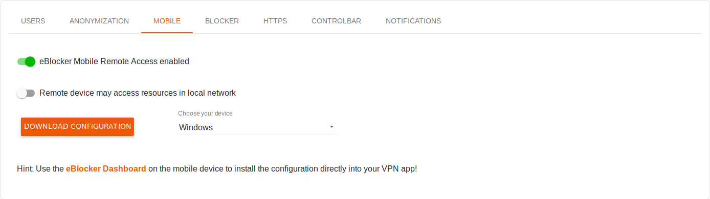

Deutsch | English
eBlocker Help > Knowledge Base > eBlocker Menu
eBlocker Base ✓ / eBlocker Pro ✓ / eBlocker Family ✓
This page is divided into the following sections:
The Devices function shows a list of all network devices that are identified by your eBlocker in your home network.

The devices are initially identified by their IP address and - as far as the eBlocker can determine - by the manufacturer. By clicking on the IP address, you open further details about the device and can adjust the settings.
You can easily disable or enable the eBlocker in the overview for all devices except your router and your eBlocker by moving the switch in front of the IP address.
Symbols at the IP address:
Symbols at the Status:
A click on the Refresh button reloads the device list.
With a click on the Edit button you can select single or multiple devices from the device list and then delete them from the device list.
If you click on an entry in the device list, the device details for this device will be displayed.
Device details
We recommend assigning a device name to all devices so that you can easily recognize them at any time (e. g. "Christian's laptop", "Living room TV" or "Sabine's smartphone").

The IP address, the hardware address (MAC) and, if available, the manufacturer per device are also displayed here.
Activate eBlocker
By default, the eBlocker is automatically activated for most devices. Only some device types (e. g. some IP phones and Hi-Fi components) are deactivated in the default setting. Devices for which the eBlocker is activated are displayed with an orange icon.

You can define at any time for each device individually whether it should be monitored by the eBlocker or not and whether the eBlocker for this device is in the pause. If the eBlocker has been activated for the device, additional functions are available below.
Reset device
Here you can reset a device to the basic device setting of the eBlocker.

Additional function - User
eBlocker Family customers can determine whether the device should be assigned to a certain user.

Additional function - Anonymization
Here you can activate IP anonymization and determine whether you want to use a Tor or VPN connection.

In addition, you can determine the cloaking for a device here. This function is only available for eBlocker Pro and Family customers, because you have to activate the HTTPS function of the eBlocker for the device cloaking. Open the selection and select one of the predefined cloaks ("User Agents") or enter your own User Agent.
Additional function - Mobile
Here you can - if the eBlocker Mobile feature has been activated - activate access to your eBlocker for this device from outside your network.

You can determine whether this device is only activated for Internet access then, or whether eBlocker can also be configured from the device from outside your network.
Additional function - Blocker
Here you can decide whether the eBlocker should not block trackers and ads, whether the eBlocker should use its Domain Blocker, or whether the eBlocker should use its Pattern Blocker. The Pattern Blocker setting preempts the activation of the HTTPS function.

If you set the setting to Automatic, the eBlocker will use the HTTPS function (enabled or disabled) to decide for you whether to use the domain or pattern blocker. The setting Automatic is our recommendation.
You can also activate the Malware & Phishing protection of your eBlocker here.
Additional function - HTTPS
If the HTTPS function on the eBlocker have been activated in general, you can instruct the eBlocker to monitor encrypted connections (HTTPS) for each device individually.

You can also activate the HTTPS error recording for each device to find the server connection suppressed by the eBlocker more quickly later in case of connection problems with apps, for example.
Important: eBlocker Base customers will only be able to see the eBlocker icon on HTTP pages.
Additional function - Controlbar
Here you can specify whether the eBlocker icon should always, never or only briefly be displayed for five seconds on the device when you access a new web page.

Additionally, there is the option to show the eBlocker icon only in standard browsers like Microsoft Edge, Firefox, Chrome, or Safari. This also includes browsers based on Chrome or Firefox. For example, the eBlocker icon will not appear in apps.
Here you can also set the position of the eBlocker icon.
Additional function - Notifications
Here you can determine for each device whether all, the most important or no system messages from the eBlocker should be displayed.

As a default setting for all devices, all system messages from the eBlocker are displayed.
You can also define individually for each device which confirmation and information dialogs should be displayed.
Automatic device discovery
The eBlocker detects new devices in your local network automatically after a short time and displays them on the Devices page.

Here you can specify whether the eBlocker should now search for new devices every 10 seconds, every 5 minutes, once per hour, or never. If you select the Never option, please note that you must always manually search for new devices.
Manual device discovery
With a click on the Discover new devices button, you can manually discover new devices at any time.